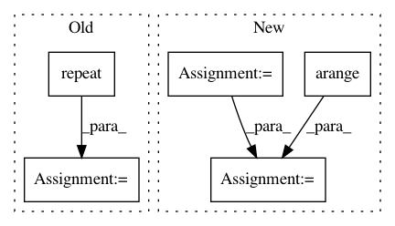

14e451962036515076b17b5bc01e89282f62b681,models.py,,create_grids,#Any#Any#Any#Any#,236
Before Change
self.stride = img_size / ng
// build xy offsets
grid_x = torch.arange(ng).repeat((ng, 1)).view((1, 1, ng, ng)).float()
grid_y = grid_x.permute(0, 1, 3, 2)
self.grid_xy = torch.stack((grid_x, grid_y), 4).to(device)
// build wh gains
self.anchor_vec = self.anchors.to(device) / self.stride
After Change
self.stride = img_size / nx
// build xy offsets
yv, xv = torch.meshgrid([torch.arange(nx), torch.arange(ny)])
self.grid_xy = torch.stack((xv, yv), 2).to(device).float().view((1, 1, nx, ny, 2))
// build wh gains
self.anchor_vec = self.anchors.to(device) / self.stride
In pattern: SUPERPATTERN
Frequency: 3
Non-data size: 5
Instances
Project Name: ultralytics/yolov3
Commit Name: 14e451962036515076b17b5bc01e89282f62b681
Time: 2019-04-21
Author: glenn.jocher@ultralytics.com
File Name: models.py
Class Name:
Method Name: create_grids
Project Name: cornellius-gp/gpytorch
Commit Name: a064b0d04419f183e0fb30e1125333e5fbd803d7
Time: 2020-11-17
Author: gpleiss@gmail.com
File Name: gpytorch/kernels/polynomial_kernel_grad.py
Class Name: PolynomialKernelGrad
Method Name: forward
Project Name: pymc-devs/pymc3
Commit Name: d6a2e55cea7640cf6ab1250bbaba66dd79a7ee85
Time: 2017-09-02
Author: maxim.v.kochurov@gmail.com
File Name: pymc3/theanof.py
Class Name: BatchedDiag
Method Name: perform